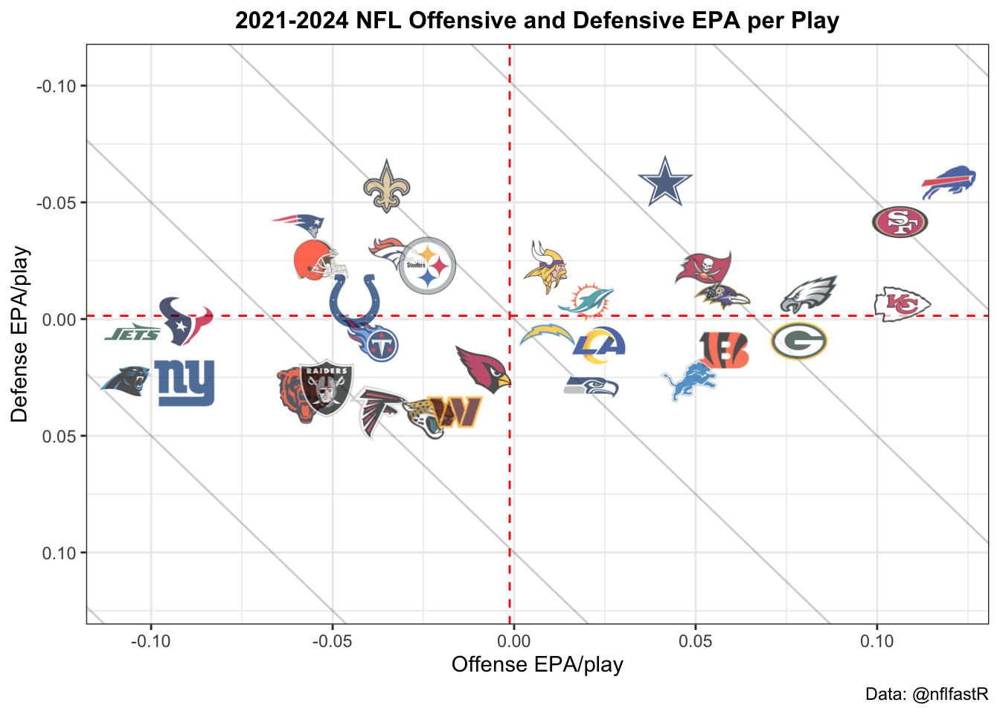
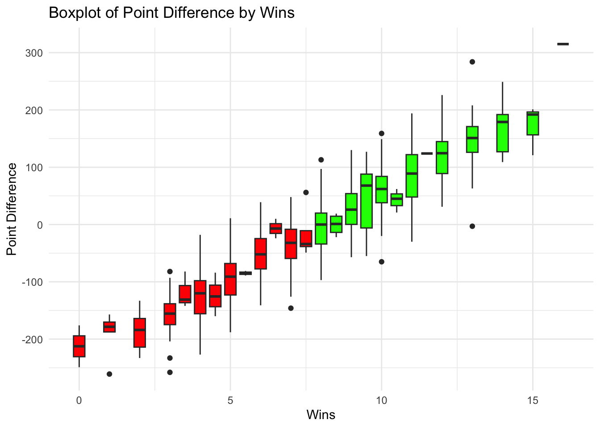

Anshi Arora, Joshua Charfauros, Christina Cui, Sean Reagan
Introduction
In the NFL world, predicting game outcomes is a highly sought after accomplishment for a wide range of stakeholders like teams, analysts, fans, etc. A wide variety of approaches and methods have been utilized in sports forecasting but the application of neural networks to this field is still being developed. By leveraging historical play-by-play data, which includes detailed information on team performance, player actions, game context, and situational factors, we aim to build a neural network model that can forecast the winner of an NFL game with a high degree of accuracy.
Overview of the NFLFastR Library and Dataset
The NFLFastR Library is a package in R that provides access to detailed play-by-play data for NFL games. Statistics about every play, including yardages, player stats, game situations, win probability, down, etc., are included in the datasets. Overall information about each game (final score, precipitation, home team, weekday, etc.) is also included.
The package includes helper functions to pull specific data. We will specifically be using the following function:
load_pbp(): downloads play-by-play data for a given season (or multiple)
The usage of this function to pull play-by-play data for years 2022-2024 is displayed below. A small subset of the dataframe is also shown.
As you can see the first few observations are different plays from the same game.
The dataset for each year’s play-by-play data has 372 variables in total. The definitions for each variable can be found in the library’s directory. Here is the link to look through the variables:
The objective of this vignette is to use a multitude of variables to predict binary win/loss outcomes of a game. To make the model more accurate (and applicable) than just using the individual game stats, we want to consider the outcomes and statistics from previous games in which the team played. Furthermore, we want to consider both long and short term trends and characteristics in their playing data.
In order to do this, we will begin by preproccesing our play-by-play data into a time series format where multiple consecutive games make up the sequence. To determine, which variables have strong correlations with game win, and thereby likely will serve as strong predictors, we will be conducting some exploratory data analysis. Then, we will train a neural network (specifically a LSTM) model on this time series data. After making the model, we can evaluate its accuracy on the validation/test set and account for any issues like overfitting. Finally, this model can be used to make predictions.
More information on why/how time series and LSTM model were used can be found in their respective sections below.
Here is a visualization of this vignette’s methodological steps:
Steps
flowchart TD
A["Review NFLFastR Library:
Get Familiar with the Functions, Structure of Data, Variables"]
B["Exploratory Data Analysis:
Looking at Trends over Time, Correlations between Variables etc."]
C["Data Preprocessing:
Cleaning, Formatting Time Series, Wrangling into 3D Array, Creating Train/Test Sets"]
E["Building the LSTM Neural Network Model"]
F["Training model and Adjusting Model based on Validation Set Results"]
G["Making Predictions on Test Set"]
A -->
B -->
C -->
E -->
F -->
G
Exploratory Data Analysis
Below is a graph displaying the teams that have the highest Offense EPA (Expected Points Added) and Defense EPA. Here we are looking for the teams in the top right quadrant of the graph which means that they have a negative Defense EPA (take points from their opponent) and a positive Offense EPA (add points to their own team). The top teams by this metric are the Bills, 49ers, Chiefs, and Eagles which were all really good teams during this time period.
EPA <-readRDS('RDS files/EPA_2024.rds')EPA

Another interesting component to look at is the type of stadium that the teams are playing in. Home teams are favored by both Vegas and their actual results when playing in a dome or outdoors. This advantage flips the other way for closed or open stadiums. For some reason, stadiums with retractable roofs make it less likely for their home team to take home a win.
This following chart is attempting to see the strength of point differential on wins. With the chart, we can see that most teams that have a positive point differential go on to win 8 or more games. This would make sense as those teams are at least even in game or have a positive record. Some outliers from the positive side of win percentage drop down below 0 in the point differential category. This means that the relationship between number of wins and point differential is not 1-to-1.
ptdiff =readRDS('RDS files/pt_diff.rds')ptdiff

Here is a graph about quarterback efficiency. Notice anything? Those same teams as before populate our top spots. Teams like the Chiefs, 49ers, Bills, and Eagles have the most efficient or near the most efficient quarterbacks in the entire league. This proves to be another good indicator of a teams overall success. Which is good quarterback play.
This final graph addresses the point totals at the end of games and whether or not the home team is favored based off of that. From the stacked bar chart we can see that the home team is always favored. However, for relatively low or high scoring point totals, that advantage drops slightly. Games that fall within the 38-49 point total typically favor the home team a little bit more than usual.
NFLFastR already has a pre built, schedule data frame which has each observation as a an NFL game. It was built by Lee Sharpe and is explained in this article (https://www.nflfastr.com/articles/beginners_guide.html#real-life-example-lets-make-a-win-total-model). To access this, we use the load_schedules function from NFLFastR.
games <- nflreadr::load_schedules(2021:2024)
Sharpe’s set, however, captures a lot of data we don’t need, things like quarterback and coach name etc, and doesn’t capture plenty of things we do care about, such as quantitative performance metrics. To solve this, we need to manipulate our play-by-play data to have single games as observations, scrape our new game-by-game data for our useful metrics, and then merge this data set with Sharpe’s schedule data set. Once this is complete, we will have time series data where each time increment is one game. Breaking this down step-by-step, first load the play-by-play data, group it by game_id, and slice all but the last observation for that game.
At this point, our ‘performances’ data set is each game from the 2021-2024 seasons. Now, we will pull from ‘performances,’ the useful quantitative metrics we would like. Anything that says EPA means expected points added, and anything that says WPA means win percentage added.
Now that are ‘performances’ data has everything we want, we will left merge it with the ‘games’ data (which is Sharpe’s original schedule set), and finally remove any unimportant predictors, such as names and unneeded ID’s.
games <- games %>%left_join(performances, by ='game_id')games <- games %>%select(-old_game_id, -nfl_detail_id, -pfr, -pff, -espn, -ftn, -away_qb_id, -home_qb_id, -away_qb_name, -home_qb_name, -away_coach, -home_coach, -referee, -stadium, -stadium_id, -location)games$home_win <-ifelse(games$result >0, 1,0)games <- games %>%arrange(home_team)
Finally, we have our desired data set. ‘games’ now has each observation as a unique NFL game from the 2021-2024 seasons, with many quantitative measures and void of the non-important predictors.
Why Time Series?
NFL football is an extremely complex series of human interactions. Two big factors that surely contribute to team success, are momentum and confidence. Unfortunately, these are not metrics in the NFLFastR data set, however, what we can do is observe recent behavior in the form of time series data. By incrementing our data set by NFL games, we are able to capture the temporal dependencies between weeks of the NFL season. Also with our logistic regression model, we have the opportunity to use lagged variables, which use observations from previous time steps as predictors for our current prediction. This introduces further layers of complexity to our model that would be absent without time series data.
Building & Training the LSTM Model
LSTM Neural Network Model (Overview, Strengths, and When it is used)